ゲームプレイ(GamePlay)
出撃(DEPLOY)
すべてのプレイヤーの出撃を有効化(EnableAllPlayerDeploy)
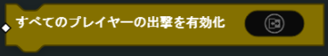全プレイヤーに、出撃画面からの出現を有効化、または無効化します。
- パラメーター
ブール(Bool)
再出撃時間を設定(SetRedeployTime)
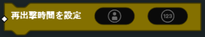ターゲット プレイヤー(Player) の再出撃にかかる時間を上書きします。
注釈
プレイヤーの再出撃時間は60秒以上を指定できません
- パラメーター
プレイヤー(Player)
数値(Number)
プレイヤーの出撃を有効化(EnablePlayerDeploy)
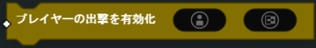ターゲット プレイヤー(Player) へ出撃の有無を設定します。
- パラメーター
プレイヤー(Player)
ブール(Boll)
全プレイヤーの出撃をキャンセル(UndeployAllPlayers)
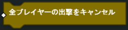戦場で生存している全プレイヤーを出撃画面に戻します。
プレイヤーの出撃をキャンセル(UndeployPlayer)
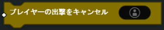戦場で生存中のターゲット プレイヤー(Player) を出撃画面に戻します。
- パラメーター
プレイヤー(Player)
ゲームモード(GAME MODE)
デフォルトのゲームモードスコアリングを有効化(EnableDefaultGameModeScoring)
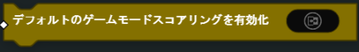デフォルトゲームモードのスコアロジックを有効化、または無効化します。 デフォルトのスコアロジックは、基本のゲームモードスコアルール（例：チームデスマッチまたはフリー・フォー・オールでキルを決める）を参照します。 独自にカスタムしたスコアロジックを実装させたい場合には、これを無効化してください。
- パラメーター
ブール(Bool)
デフォルトのゲームモード勝利条件を有効化(EnableDefaultGameModeWinCondition)

ゲームモードのデフォルト勝利条件ロジックを有効化、または無効化します。 制限時間に到達する、あるいはチーム、またはプレイヤーが目標スコアに到達すると、勝利条件がチェックされます。 独自の勝利条件を発動させたい場合には、これを無効化してください。
- パラメーター
ブール(Bool)
ボイスオーバーメッセージングを有効化(EnableVOMessaging)
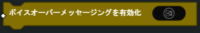ゲームモードのボイスメッセージを有効化、または無効化します。
- パラメーター
ブール(Bool)
ゲームモードを終了(EndGameMode)
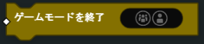現在のゲームモードを終了し、与えられた プレイヤー(Player) または チームId(TeamId) を指定します。 チームIdが0に設定されている場合は、ゲームモードが引き分けで終了します。
- パラメーター
チームId(TeamId) or プレイヤー(Player)
全プレイヤーの出撃を強制(ForceDeployAllPlayers)
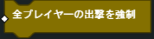出撃画面にいる全プレイヤーの出撃を強制させます。
ゲームモードのタイムを停止(PauseGameModeTime)
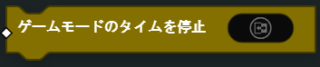指定された ブール(Bool) 入力に基づいて、ゲームモード・タイマーを一時停止したり、解除したりします。
- パラメーター
ブール(Bool)
ゲームモードのタイムをリセット(ResetGameModeTime)
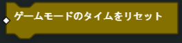ゲームモードの時間をリセットします。
ゲームモードスコアを設定(SetGameModeScore)
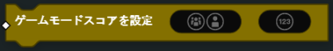指定された プレイヤー(Player) または チームId(Player) のゲームモードのスコアを設定します。
- パラメーター
プレイヤー(Player) or チームId(TeamId)
数値(Number)
ゲームモードのタイムリミットを設定(SetGameModeTimeLimit)
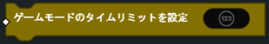ゲームモードの持続時間を（秒）設定します。
- パラメーター
数値(Number)
ゲームモードのターゲットスコアを設定(SetGameModeTargetScore)
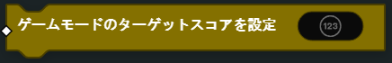勝利を決めるのに使用するゲームモードの目標スコアを設定します。
- パラメーター
数値(Number)
全般(GENERAL)
チームIDを設定(SetTeamId)
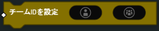指定された チームId(TeamId) を使用して、ターゲットプレイヤーのチームを設定します。 これにより プレイヤー(Player) は強制的に出撃画面に戻されます。
注釈
このブロックは「フリー・フォー・オール」ではサポートされておらず、現在AIでは機能しません。
- パラメーター
プレイヤー(Player)
チームId(TeamId)
兵士(SOLDIER)
キル(Kill)
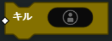ターゲット プレイヤー(Player) をキルする（ダウン状態をスキップ）。
- パラメーター
プレイヤー(Player)
ターゲットをスポット(SpotTarget)
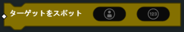指定された持続時間（秒）、ターゲット プレイヤー(Player) をスポットします。
- パラメーター
プレイヤー(Player)
数値(Number)（時間）
ターゲットのスポットをキャンセル(UnspotTarget)
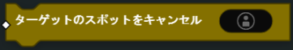ターゲット プレイヤー(Player) のスポットを解除します。
- パラメーター
プレイヤー(Player)